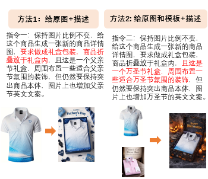

SERVICE HUB
麦杞岐（maggie.xie）对接服务站
OBM2男装衬衫 / 夹克外套类目 · 商家运营工具入口
01 / CATEGORY
类目指引
先复制商家需要的类目路径，再向下查看完整类目图。
类目指引图原始类目图 · 仅作运营参考

02 / TITLE
标题优化
选择商品类型 → 按维度选词 → 自动组合中英文标题。生成标题不可以直接使用，请检查后使用。
组合原则：先完成必选维度，再补充高优维度，最后按实际商品情况扩展属性。
LIVE RESULT
0 / 100标题预览
⚠ 生成标题不可以直接使用，请检查后使用。请确认商品属性、品牌词、敏感词及商品实际情况。
请选择词语
Select keywords
03 / VISUAL
视觉优化
参考图片 + AI 指令，先以衬衫做第一版。

衬衫视觉优化示例
衬衫 · AI 改图指令
保留商品，升级表达
04 / REFERENCE
需求款式参考
以夹克外套为例，查看都市基础风、工装 / 军事类方向。
都市基础风款式参考
打开完整 PDF →工装 / 军事类款式参考
打开完整 PDF →05 / PRIORITY
最高优先款式
衬衫与外套夹克重点款式集合，快速查看当前方向。